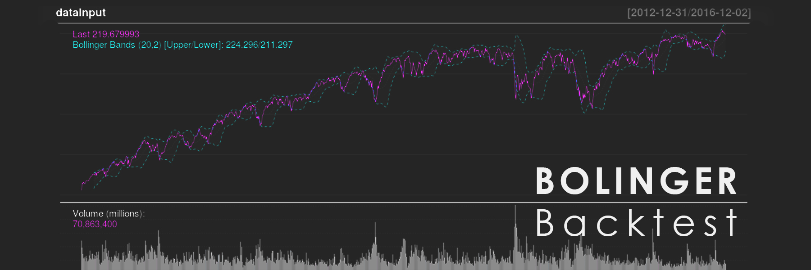
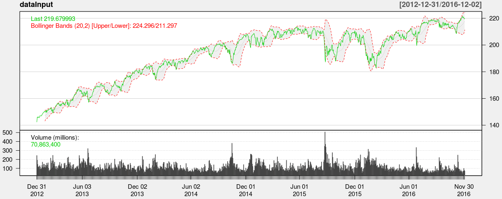
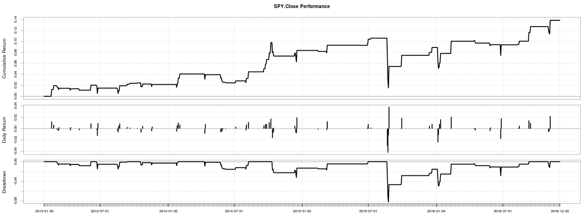

Sample project

This app runs backtesting using Bollinger Bands with no commission with data from Yahoo.Results include band plot
and analysis of the specified Bollinger Bands strategy. You may have to wait for plots to load/reload.
App can be found here.
Presentation pitch here
GitHub repository here.
Bollinger Bands is a strategy where one buys when price drops belowthe lower band and sells when it pops over the upper band.
The upper and lower bands (red) are moving averages of type SMA (simple), WMA (weighted), or EMA (exponential) for a given
days plus/minus two standard deviations.Cumulative return is the total return since one begins trading. For example,
a cumulative return of 0.10 means 10% total return.
Daily return is return on a daily basis. Drawdowns are periods where the portfolio is at loss. For instance, -0.1 drawdown
means one is losing 10%. More in-depth statistics can be viewed in Stats and Downside.

